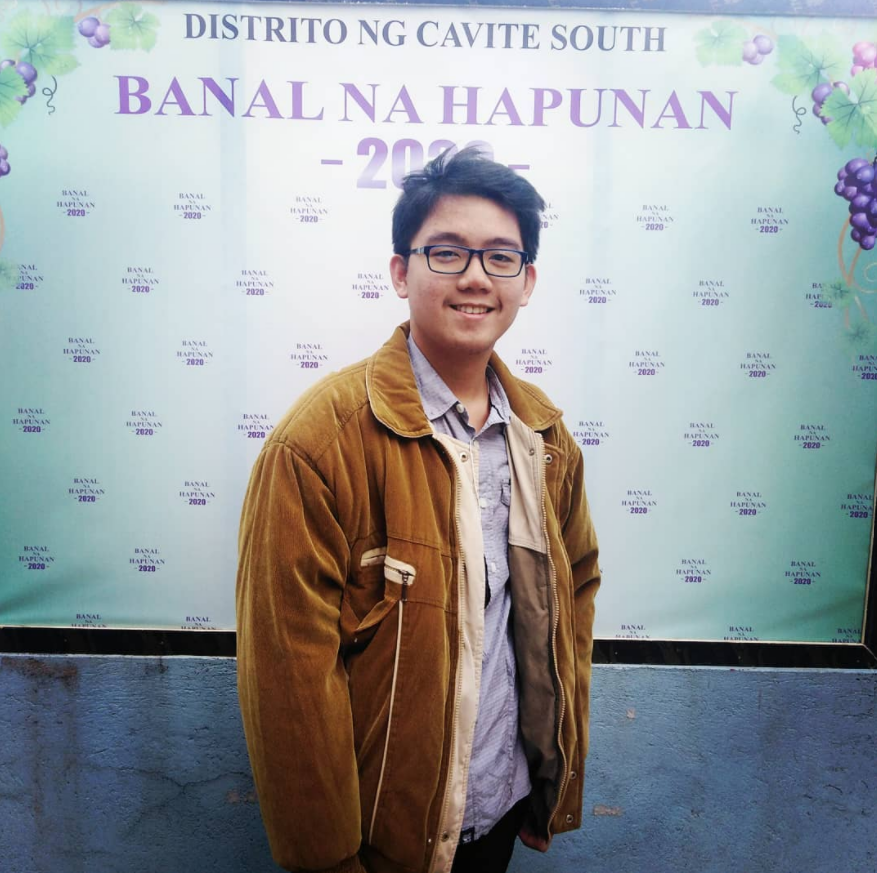
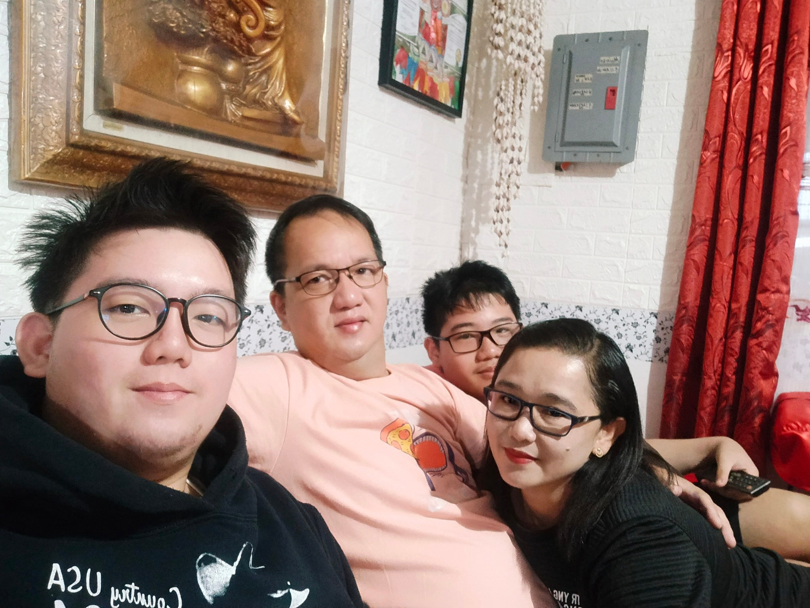

All about myself...

My name is Dinothelo P. Quiroga, you can also call me Dino instead. I am 19 years old and was born on March 13, 2003 in Trece Martires City, Cavite.
I am Filipino, no other ethnicity. My religion is Iglesia Ni Cristo(Church Of Christ) since birth. I am kind, humble, and helpful. I'm the oldest son in the family.
My educational background, I graduated preparatory level in Acacemia De Regina now Saint Thomas Becket Academy, I am batch 2009. Grade 6, I graduated at Fabulous Christian Academy, batch 2015.
I graduated high school at Saint Thomas Becket Academy on 2019. And in my senior high school, I graduated at AMA Computer College Cavite, batch 2021.
I am now currently studying at Cavite State University, my course is Bachelor of Science in Computer Science. I'm in my first year of college. Freshmen.
My skills in programming languages are not great but I can do basic codings in C#, Python, and HTML. My first programming language that I know is HTML, I learned it when I was grade 8. I coded it in the notepad.

I have a happy family, My father's name is Joseph F. Quiroga. He is a hard-working, kind, helpful, and a faithful father. He is currently at OverSeas working as
a technician on Alfred Talke Logistics at Mesaieed, Qatar. My mother's name is Josephine P. Quiroga. She is kind and knows what is the best for us.
I also have a younger brother, his name is Devinscent P. Quiroga. He is smart, kind, helpful, and likes to watch animes. He is currently studying at Amore Academy in Trece Martires City.
When we have spare time, we like to play UNO. We also travel alot, and attending to church every thursday and sunday.